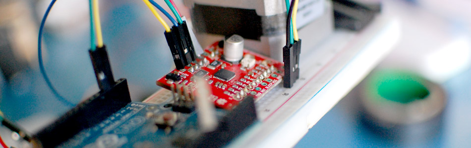

The Big Easy Stepper Motor Driver + Arduino

Stepper (or step) motors are really cool. They are perfect for automation or any time you need a motor to turn to a specific point, at a specific speed, in a specific direction. And, unlike typical motors, steppers are able to do all of this, and hold their position when they are not moving - The trade off is that they cant move as fast, and you have to power them at full power all the time, but you get total control in return.
Steppers have a minimum amount they can move known as a step. You can feel these steps if you slowly turn your stepper by hand. The most common steppers have 200 steps per revolution, so all movement is in 1.8º increments (360º / 200). Controlling them can get tricky at first, so today we are doing an article on using the Big EasyDriver Stepper Motor Driver. The big easyDriver is the big brother of the easy driver we wrote about last year. It is able to take a lot more abuse and power, so it isn't as easy to destroy as the easy driver, can power much larger motors, and it also gives you a little more control by letting you change the microstepping setting.
Motor Voltage / Current
A lot of people ask about what voltage they should use to power their motor. Well, when using a stepper driver, you are powering the driver, not the motor. The driver will take over powering the motor for you.
It is best to power the driver with the highest voltage you can ( up to 35V max for this driver ). This will allow the motor to spin faster than if powered at a lower voltage. Exactly why this is is pretty complex, but if you want to know more about it, you should really read this: Gecko Drive - Step Motor Basics
On the bigEasy driver is a mini potentiometer to control the current to the motor. This varies between 0ma and 2A (2000ma). You want to set it to whatever your motor is rated to. Too high, and you could burn the motor up, too low, you wont get all the power out of your motor. Note: The arrow indicators on the current adjustment potentiometer are backwards. Keep this in mind when adjusting the current limits. If you are running a higher power motor, you will probably want to put a heat sink on the driver as well.
{kind=link}
Hooking it up
Even though there are some 30 pins on the Big Easy Driver, we only need a few to get this up and running. In fact, a good deal of the pins are actually just duplicates that are spaced out differently.
The barebones setup:
Power the driver with 8-35v - If using a wall adapter, make sure the adapter has at least enough current for the motor. A higher current/amperage rating is better, and just means it wont burn out. (The Big Easy Driver can supply up to 2 amps)
Connect the 3 control wires from the "gnd", "dir", and "step" of the Big Easy Driver to the Arduino as shown.
Connect the stepper motor to the driver - For me the red/green were one pair, and the blue/yellow was another. If this does not work for you, see the section below on finding your motors coil pairs.
Code
For the arduino code for the driver, im going to be using AccelStepper Library. This is an amazing library that I use for all my stepper needs now. It is even does acceleration and deceleration, supports multiple drivers at once, and most importantly it is non blocking. Meaning, you can be moving your motor as you are reading from a sensor, or turning on lights etc.
The library even keeps track of the position of the motor. So if you tell it to go to 10,000 - It knows it is at 9,00 already, so it moves an additional 1000 steps. Then you can tell it to go home, and it will go back 10,000 steps to 0.
I highly recommend you download the full library from the author. The version I have here is barebones with none of the examples. It is just here because I believe if you post code, you should post everything you need to make it work
To make this code work, before you load the code, or even open the Arduino program, we need to place the "AccelStepper" folder into your Arduino Library. If you don’t know where that is by default, Look to the right.
If you click the download button to the right of “Arduino” you can download the whole thing as a zip, so you dont need to copy all the files.
Default Library Folder Location
On your Mac:: In (home directory)/Documents/Arduino/libraries
On your PC:: My Documents -> Arduino -> libraries
On your Linux box:: (home directory)/sketchbook/libraries
Additional Information
Finding Your Motors Coil Pairs
This driver only needs 4 wires from your stepper. If you have a 4 wire stepper, awesome! If you have a 6 wire stepper, it will be slightly trickier. But no matter what, we need to find the 2 main coils inside of the motor. And if you get it wrong, the motor will just twitch or not move, but you wont break it.
4 wire motor
Using an ohmMeter, pick one wire at random, and test it with the others until you find a pair that shows resistance of a few ohms (1 - 200ohms most often). Those 2 are your "pair A". Make sure the other 2 wires have the same resistance on them, (if not, it may be broken) and that is your "pair B". With the two pairs of wires, there isnt a backwards, so just plug wires from "pair A" into the "A" on the driver, and "pair B" into "B".
6 wire motor
Checking the documents on the motor is the easiest, but if you dont have it, read on.
6 wire motors have two coils in them just like 4 wire motors. But 6 wire motors also have extra wires that connects to the middle of each coil (centers). So each coil actually has 3 wires, a center and two ends. We don't use coil center wires, we just need the 4 coil ends (2 from each coil).
Basically, We need to find ends of the two coils. The ends of the coils will have twice the resistance as the center to an end. So we need two pairs of wire that have the highest resistance in the group.
The easiest way to find out the right 4 wires is to look at the documentation for the motor, but if you dont have that, you can with some testing, find the right ones.
To find the correct 2 wires, we need to locate the 3 wires from each coil. Start by just picking one at random, and using an ohmMeter, test the resistance with the others until you find the 2 connected to that wire. (3 of them will show no connection because they are part of the other coil). Now, these 3 are for coil "A". Now, take these 3 wires and test the resistance between any 2 of them until find the 2 that have the highest resistance. These are the two ends of that coil "A". Do the same for the other 3 wires to locate the ends of coil "B".
With the two pairs of wires, there isnt a backwards. So just plug wires from coil A into the A on the driver, and the two from coil B into b.
8 wire motor
There is no way to do this without looking at the documentation.
Microstepping
Most stepper drivers offer something called microstepping, and the Big Easy Driver is no exception. As I mentioned before, steppers have that minimum movement called a step. Microstepping breaks down that step into smaller micro steps. Microstepping allows for smoother, quieter, more accurate control, at slower speeds.
When using microstepping, a step motor will require more "step pluses" to move the motor. For instance if you are using 16 microsteps (the default on the Big Easy Driver) per step, a 200 step motor would require 3200 "step pluses" to make a full revolution. Just take note when you wonder why telling it to step 200 steps barely rotates the motor.
Microstepping will reduce the maximum speed / torque of the motor (about 30% less), so it is a trade of speed vs smooth. Because of this, many high end drivers switch to full stepping (no microstepping) at higher speeds, and technically, you could do that with the big easyDriver, but it's too complex for me to figure out, so I wont be covering that.
Adjusting the microstepping
The Big Easy Driver defaults to 16 step microstepping mode. If you want to reduce that, you can do so by pulling the MS1, MS2, and MS3 pins HIGH (connecting them to 5V) or LOW (connecting them to GND). Check out the chart on the side to see how make the adjustments.
{kind=link}
Article taken from bildr.org with minor changes - I am the original author of this content